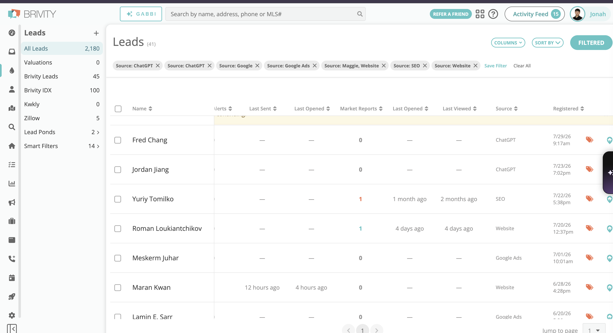
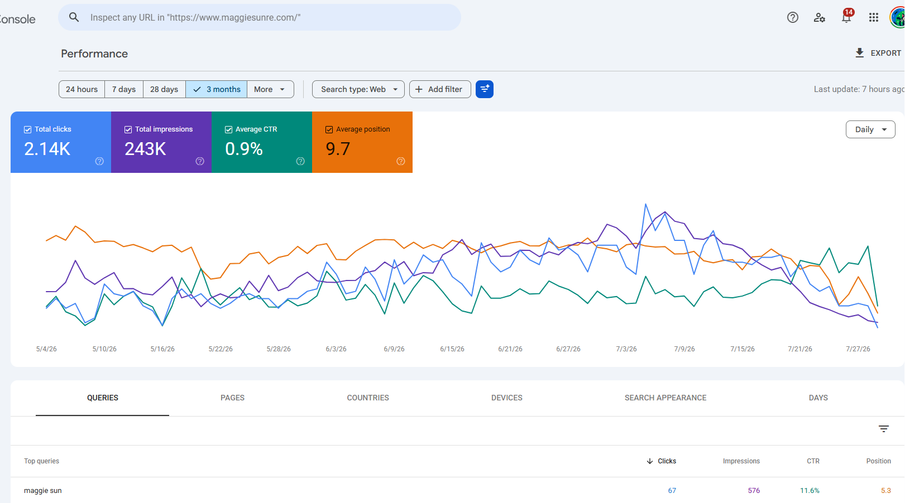
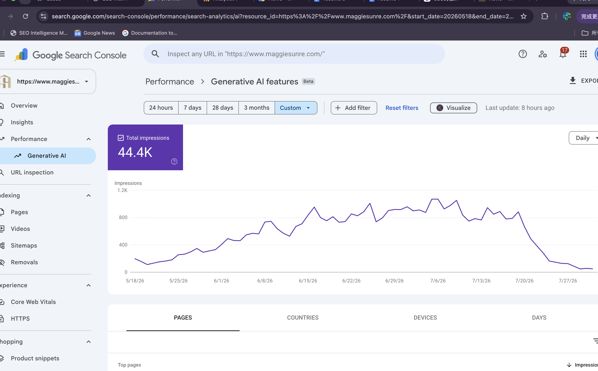

← 返回案例
Local SEO + SEM
西雅图高客单价房地产行业的 Local SEO 与双语 SEM 案例。
作为该海外远程项目的唯一 SEO 负责人，我全程负责 Maggie Sun Real Estate 的本地 SEO 与 SEM 工作，涵盖双语内容策略、技术 SEO、本地搜索可见度、Google Ads、线索追踪、站外推广及效果复盘。
+486%有效询盘增长
6成交线索
7Google Ads 线索
10%Google Ads CTR
策略与执行
- 围绕买家决策搭建内容体系：针对西雅图买家从市场研究、社区比较到联系经纪人的不同需求，规划英文与双语内容，覆盖住房成本、市场趋势、政策和购买顾虑。关键词覆盖增长至700+；GSC 追踪搭建后记录2.14K次点击与243K次展示。
- 用结构化表达提升答案可见度：通过答案前置、FAQ、摘要和比较表格，清晰呈现买家关心的信息。2026年5月18日至7月31日，GSC Generative AI 报告记录44.4K次展示。
- 从零建立高意向搜索广告：围绕房地产商业关键词搭建 Google Ads，持续复盘搜索词、定向、否定关键词与表单线索，获得7个有效线索，点击率约10%。
- 将社区讨论转化为内容洞察：通过 Reddit、Quora、Google Business Profile、LinkedIn 和 EDM 分发内容、了解用户问题。其中一篇西雅图住房讨论获得365条评论与160次赞同，为后续选题提供真实买家反馈。
- 连接获客渠道与成交结果：结合网站内容、本地 SEO、双语营销与 SEM，并通过 CRM 跟踪线索质量，项目整体累计获得41个有效线索，其中6个完成成交。
- 保障迁移与页面实施质量：参与 WordPress 至 Brivity 的网站迁移检查，处理重定向、404、索引及页面结构问题，并完成内容发布和上线验收。
有效线索由上一可比周期的 7 个增长至 41 个，增幅为 486%。GSC 追踪搭建后记录了 2.14K 次点击和 243K 次展示；2026 年 5 月 18 日至 7 月 31 日期间，GSC Generative AI performance report 记录了 44.4K 次展示。




1 / 4